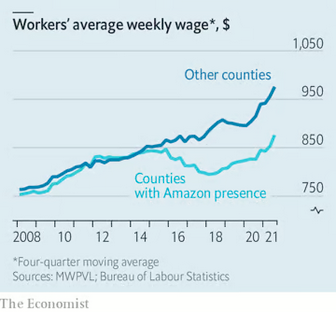

A Topography of the Amazon Cloud
Mapping Amazon’s Social and Environmental Encroachment
By Lauren Bridges1 and Ethan McFarlin2 (2024)
[I] Clouds and Concrete
Driving along route 28 from Chantilly to Sterling in Northern Virginia, you may not notice the cluster of gray buildings with blue ribbons of paint set back from the road, dotted with newly planted young trees. If you did, you might assume these are the office buildings of an unnamed defense contractor – a common employer of these parts. If you looked closer you might notice the strange lines of the building which don’t follow regular ceiling heights of an office, or the few cars in the parking lot, the lack of windows, the security cameras, and the black metal fence that curves into spikes pointing outward. These unnamed buildings are Amazon’s data centers and they look eerily similar to the warehouses you might find along I-95 in New Jersey, I-15 south of Chicago, I-45 south of Dallas, or the I-10 connecting Los Angeles with the Inland Empire.
(Author screenshot, Amazon Data Center: Oct 8, 2024)
Entering into Cloud Topographies presents a two-dimensional map of Amazon’s built structures – its data centers and warehouses – dotted across the United States in relation to the communities that surround these buildings.
Cloud in the computing sense – understood as centralized computation and data storage accessed over the internet – is a metaphoric extension of rain-clouds or an opaque mass suspended in the sky. It was used to describe computing systems and networks whose composition and connections were somewhat cloudy – opaque, unknown or difficult to describe. Figuratively, dark clouds represent something foreboding and threatening; while to describe something as in the clouds might signal the ethereal, divine, or fanciful. But the term cloud holds an older meaning. Derived from Old English clud, cloud first referred to a “mass of rock” and was used to describe the similarity between cumulus clouds and rocks.
Topography, in the narrow sense, refers to a cartographic representation of terrain depicting the shape and dimensions of natural and artificial features of land surfaces. Topography – from Greek topos meaning place and graphia, to write or record – once referred to writing about place in its social, cultural, elemental, and dimensional contours. Today we might call this type of topography, local histories.
Through this map and essay, we seek to hold the historical origins of the terms cloud + topographies together with the contemporary computational geographies that the cloud produces and obscures. Today’s cloud encompasses both cloudy computational networks and local histories made of rock (ore, limestone, shale, and coal) embodied in the hardware, concrete, and power sources fuelling the cloud. Extending the cloud metaphor to the hydraulic cycle, we can also see the cloud as liquid (water, diesel, natural gas liquids) and gaseous (carbon dioxide, methane, nitrogen oxides), all of which play into local stories of what the cloud is and what it does in the places it resides.
Through this map and accompanying essay, we invite you to explore the cloud topographies of Amazon’s industrial infrastructures and consider what lies beneath the birds’ eye view of Amazon’s tentacular footprint.
[II] A Guide Into the Map
The map opens with a composite measure of social vulnerability in the census tracts where an Amazon built structure is located. The larger the size of the bubble, the higher the social vulnerability faced by the community living in the same census tract as Amazon’s warehouses and data centers, as measured by the U.S. census. Some areas look like a virus spreading out from urban networks and along well-traveled highways. Other dots stand as lone locations peppered across the middle of states – Rapid City, South Dakota; Abilene, Texas; Springfield, Missouri; Jerome, Idaho – where Amazon workers convene to ensure the constant flow of data and goods from supplier to customer.
You can see the relationship between social vulnerability and warehouse location depicted in color on the map by moving your cursor over to the legend. Then switch the view from “Classification” (the type of building) to the “National Average”, which shows color-coded mapping of all the census tracts where the social vulnerability variable is higher than the national average (depicted by yellow) or lower than the national average (depicted by green).
Visually, you may notice specs of green against a splattering of yellow paint emanating from major metropoles, up the East and West coasts, over Midwest and Rust Belt states, and along the Southern States. The yellow highlights reveal a statistically significant relationship between census tracts where an Amazon warehouse is located and census tracts with higher social vulnerability compared to census tracts without an Amazon warehouse. Or to put that another way, Amazon warehouses are more frequently located in neighborhoods with higher levels of social vulnerability compared to the national average.
Further down on the right hand side, you’ll find a timeline with the date the building was established and projections on what is to come. If you highlight a section of the histogram and drag it left or right, you’ll notice an immense jump in new warehouses from 2019 to 2021 to account for the increased demand for online shopping in the early years of the Covid-19 pandemic. Switching the view to data centers, you can see the accelerating demand for data centers from 2019 to 2025 partially driven by the AI-boom. To view only the warehouses uncheck the Data Center layer, or vice versa.
The map includes social vulnerability and environmental justice factors, which have been deemed by the Centers for Disease Control and Prevention (CDC) as important to measure. And you can easily switch between variables such as PM2.5 (a measure of the annual mean days above the PM2.5 regulatory standard) or an estimate of the Black/African American population in the same census tract where an Amazon warehouse or data center is located by clicking on the drop down menus on the top right.
Switching between views, begins to reveal the relationships between variables. You may begin to notice visual patterns between air quality, race, and the type of Amazon building. For example, the way that warehouse locations and particulate matter tend to colocate where communities of color live.
Interacting with the map and its multiple viewpoints offers a way to turn the cloud over, to see into its configurations and operative logics through its relations to place and people. Because the cloud is notoriously difficult to study, the mapping tool offers a way to study its imprints or the traces it leaves behind. The cloud topographies map shows the way local environments prehend Amazon’s built structures – that is, the way environments sense industrial structures in terms of diesel, particulate matter, and impervious surfaces impacting water sources. In this way, local topographies act like media in the way they contain this information and leave imprints of change in the air, land, and water. We can read these cloud topographies through the data and communities stories of living alongside Amazon’s built environment.
With thousands of Amazon structures scattered across the United States, the map tells stories of situated variations compared to the national average. As such, looking for the outliers, highlights the most extreme variations compared to the average national census tract.
Outliers present a problem in statistical analysis for the way they skew averages and distributions. These problematic data points indicate abnormal distances from other values in a data set and raise questions for an analyst on how to smooth out their difference. Sometimes the best way to deal with an outlier is to delete it from the data set, perhaps with a footnote to justify its exclusion. Other times, outliers represent faulty data or an incorrect measurement. But sometimes outliers contain valuable information that should be investigated carefully. Here we unpack environmental and social justice outliers in relation to Amazon’s built environment.
You can find these outliers by referring to the “Facilities By State” distribution on the lower right-hand side of the map. Click on the dots at either end of the distribution to reveal the location of that facility.
Below we unpack outliers, clusters, and deviations from the data that tell a story, not just of Amazon, but compounding toxic exposures from industrial production.
[III] Infrastructures of Difference
Socioeconomic inequality and environmental injustice are endogenous to Amazon’s operations, which renders some bodies and communities as valuable and discards others as expendable.
Amazon is the earth’s largest online retailer, the largest public cloud provider in the market, and the second-largest private employer in the world with 1.55 million employees. Amazon’s founder and executive chair, Jeff Bezos is, on any given day, one of the wealthiest people in the world with an estimated net worth of around $220 billion. Yet, news outlets have reported Amazon warehouse workers and delivery drivers were forced to urinate in bottles or skip bathroom breaks to meet their daily rate, or risk being fired. Labor organizers and workers have also raised concerns about Amazon’s misleading reporting of its unsafe working conditions and dangerously high injury rates, which is almost double the rate for non-Amazon warehouses. Researchers at the University of Illinois Chicago have reported how roughly half of Amazon warehouse workers struggle with housing and food insecurity, and one-third rely on public assistance programs such as the Supplemental Nutrition Assistance Program (SNAP). And economists have conducted studies on the “Amazon effect”, which shows a trend of overall lower wages compared to counties without Amazon’s presence (See Figure 1).
Figure 1: Average worker weekly wage in counties with and without Amazon’s presence
Source: (“What Happens When Amazon Comes to Town,” 2022)
These factors together––Bezos as one of the richest people in the world and Amazon workers living with food and housing insecurity––make Amazon one of the most economically unequal workforces in existence.
Amazon’s inequality of the workplace extends beyond pay rates and economic precarity experienced by some Amazon workers and into the communities where Amazon buildings are located. The map reveals how the location of Amazon’s infrastructures – in particular, where Amazon decides to locate its warehouses – shares a statistically significant relationship to several key social and environmental justice factors. In addition to the map, we conducted statistical tests to understand the relationship between Amazon’s warehouse and data center locations. Below we list some characteristics of the census tracts with an Amazon warehouse or data center, compared to census tracts without an Amazon structure.
- Socioeconomic characteristics of communities from warehouses and data centers
- Related health impacts
- Demographic factors which predict where Amazon’s warehouses will be located
Data sources: 2020 Census, MWPVL May 2024, CDC Social Vulnerability Index 2020, CDC Environmental Justice Indicators 2022.

Data sources: 2020 Census, MWPVL May 2024, CDC Social Vulnerability Index 2020, CDC Environmental Justice Indicators 2022
The data analysis reveals how Amazon is creating geographies of inequality based on where it locates different aspects of its logistical and cloud business.
While Amazon’s data centers are typically located in areas with some social and environmental vulnerability such as proximity to high volume roads, proximity to potentially hazardous and toxic sites, and in communities with higher Asian and minority populations, they are typically located in areas with lower socioeconomic vulnerability compared to the national average with lower than average unemployment rates, lower housing burden, and low levels of pre-existing chronic disease. This means that, on average, data centers are located in communities with overall higher socioeconomic status and lower levels of environmental burden.
In contrast, Amazon’s warehouses are more frequently located in communities that experience high environmental injustice and social vulnerability. Specifically, Amazon warehouses are more frequently located in communities that are more racially diverse than the national average, experience higher levels of unemployment and economic burdens such as the cost of housing, crowded households, and single-parent homes. The communities where Amazon locates its warehouses experience more air pollution, impaired water sources, and close proximity to potentially hazardous and toxic sites. These communities are close to major transportation hubs and infrastructures including high-volume roads, and airports, all of which contribute to poor air quality.
Although there is no statistical correlation between all Amazon warehouse locations and adverse health impacts, a closer look at specific case studies reveals how environmental justice burdens are often concentrated in specific locations around the country.
[IV] Case Study: Social Vulnerability
The workers inside these Amazon buildings are the operational engine that work around the clock to ensure the constant flow of goods and data to uphold the promises of a digital society that’s always connected and awaiting your next clickable purchase. But unlike computers located in data centers, warehouse workers are exposed to extreme heat and dangerous working conditions. While the data center is secured from outside threats through layers of physical and virtual security, moderation of temperatures for optimal performance, and maximal up-time is ensured through redundancy, the warehouse treats redundancy with hostility. Instead, maximal efficiency through optimal movement and dexterous motion embody the logistical aspirations of the Amazon warehouse. Repetitive movements, lifting, bending, and standing for hours, along with high productivity targets, time pressures, and limited opportunities for bathroom breaks and hydration, lead to higher than average injury rates. Additionally, the risk of accidents is elevated in warehouses due to the use of heavy machinery and moving equipment.
Amazon warehouse workers living in communities with high social vulnerability—where housing burden, single-parent households, higher unemployment, and lack of health insurance are common—face compounded risks both at work and outside of it. In such communities, limited access to affordable healthcare makes it harder for workers to address work-related injuries and illnesses, and the absence of health insurance can lead to untreated or worsening conditions. Housing burdens mean workers may live in crowded or unstable conditions, increasing stress and health risks, which are further intensified by physically demanding jobs. Single parents often face additional childcare challenges, which can lead to stress from balancing long shifts and family responsibilities without adequate support. High unemployment levels can also lead to job insecurity, making workers feel pressured to meet demanding productivity standards at any personal cost, which further elevates the risk of injury and burnout. These combined vulnerabilities deepen financial and physical strain, creating a cycle that makes recovery and stability difficult for workers and their families.
Because workplace injuries pose such a high risk, looking at the uninsured can reveal particular vulnerabilities for Amazon workers. According to the Cloud Topographies map, a worker living in the same census tract as Amazon’s Milner Rd, Houston Texas (IAH3) is 564.33% more likely to be uninsured compared to the national average.
When we combine switch to other social vulnerability factors, we start to see a pattern emerge: the warehouse is located in a census tract with a population of Latino or Hispanic residents that is 162% higher than the national average, where more than 51% of the population live below 150% of the national poverty rate, and the composite social vulnerability is 56% higher than the national average.
When multiple social vulnerability factors combine, this can leave workers at risk of cascading series of social and economic precarity. This was the case with several workers, reported by The Guardian in June 2023, who were injured in an Amazon warehouse and then had to start a GoFundMe to help pay their bills.
For example, one worker, Keith Williams, was injured loading a trailer in Rock Tavern, New York, when a computer desk fell on him, hitting him on the head. He went to Amcare, Amazon’s on-site medical clinic where he was given aspirin and ice. Months later, he was injured again from repetitive heavy lifting, and again he was sent to Amcare. After waiting for an hour, he went to urgent care. Facing injury, Williams was unable to work and without supplemental income he couldn’t afford to pay for housing and his family were evicted from their home.
“I’m battling with the workers compensation insurer, they give me the runaround a lot… Because I hadn’t been there a full year when I got hurt in February, I wasn’t able to receive my full benefits, which is why we’re homeless – because we can’t afford housing” (Sainato, 2024).
[V] Case Study: Environmental Vulnerability
Warehouses, Air Quality, and the “Diesel Death Zone” in Inland Southern California.
Air pollution in Southern Inland California – where Amazon (and other online retailers) have concentrated their warehouses to take advantage of the combined proximity to LA’s ports, access to highways, and the San Bernardino freight airport – is now frequently referred to as a “diesel death zone” (Barboza, 2021; Casey, 2020; Phillips, 2022).
According to the CALEnviroScreen 4.0, a study conducted by the Office of Environmental Health Hazard Assessment (OEHHA), both San Bernardino and Riverside reported average levels of PM2.5 above 12.3 μg/m 3 or among the top 10% of worst air pollution in the State (August et al., 2021). Particulate Matter 2.5 (PM2.5) is fine inhalable matter that is so small they can travel deeply into the respiratory tract and cause health problems such as heart disease, asthma, and low birth weight.
The Cloud Topographies map shows consistently higher than average values of PM2.5 across Southern California from the Port of LA to the San Bernardino mountains.
Particulate matter from diesel emissions (Diesel PM) is concentrated near ports, rail yards, warehouses, and freeways and has serious health effects including cardiovascular and pulmonary disease, lung cancer, and irritation to the eyes, nose, and throat (August et al., 2021). Similar to PM2.5, diesel PM is in the top 10% along corridors throughout inland Southern California.
In 2023, the American Lung Association State of the Air reported that San Bernardino and Riverside were ranked as the top two (respectively) most polluted counties across the United States in relation to ozone pollution and the seventh and eighth worst counties in relation to average particulate matter (American Lung Association, 2023). Exposure to high levels of ozone makes it harder to breathe, makes the lungs more susceptible to infection, can aggravate lung disease, and increases the chance of asthma attacks, among other issues (US EPA, 2015b).
An Amazon warehouse worker in Southern Inland California, where San Bernardino and Riverside counties rank as the most polluted in the U.S., is a stark example of environmental injustice. This region, with high levels of ozone and particulate pollution, presents serious health risks, especially respiratory issues, for residents who must live and work in these conditions. Many of the region's residents are Latino and from other minority groups, populations that disproportionately bear the brunt of environmental hazards. For warehouse workers who already face physical strain and high injury rates, exposure to pollution compounds the risk of respiratory and cardiovascular problems. With fewer resources and limited access to healthcare, these workers have less ability to address or avoid the health impacts of pollution, highlighting the inequity in how environmental health burdens are distributed across communities based on race and income.
[VI] Case Study: Health Vulnerability
Allentown and toxic exposure.
Switching the Environmental Justice variable to “Probability of contracting cancer over life” (E_TOTCR) will reveal an extreme outlier located in Allentown, Pennsylvania.
For residents living in the same census tract as Amazon’s Allentown warehouse, the probability of contracting cancer over the course of their lifetime, assuming continuous exposure to toxic air pollution, is 1,777.97% higher than the national average.
A quick search will reveal Allentown residents are being recruited in a class action lawsuit by Edelson, a plaintiff’s law firm specializing in class action suits against big companies, for potential exposure to Ethylene oxide (EtO) allegedly by B. Braun medical manufacturer.
According to the law firm:
The EPA's National Air Toxics Assessment (NATA) study found a high concentration of Ethylene Oxide in the Allentown and Bethlehem, Pennsylvania area. Ethylene Oxide (or EtO) is a human carcinogen that has been shown to cause cancers of the white blood cells, including non-Hodgkin lymphoma, myeloma, and lymphocytic leukemia. The EPA found that some residents are at an increased risk of cancer. Specifically, the EPA estimates that these levels of EtO emissions may have a cancer risk of up to 600 in 1 million—nineteen times the national average. The alleged source of the EtO contamination identified by the EPA is the B. Braun facility. B. Braun uses Ethylene Oxide to fumigate and sterilize medical equipment and supplies. When medical equipment is sterilized, vast amounts of the gas is released into the air and the surrounding communities.
Source: https://edelson.com/Allentown-Ethylene-Oxide
Ethylene oxide (EtO) is a colorless, flammable gas commonly used in sterilization processes for medical equipment and as a chemical intermediate in manufacturing. However, exposure to ethylene oxide poses significant health risks, especially with prolonged or high-level contact. Acute exposure can cause respiratory irritation, headaches, nausea, and skin burns. At higher concentrations, EtO is a central nervous system depressant and may lead to symptoms like dizziness, drowsiness, and in severe cases, unconsciousness. Chronic exposure is associated with more severe health effects, including an increased risk of cancers, such as leukemia, lymphoma, and breast cancer, due to EtO's classification as a human carcinogen. Additionally, long-term exposure can affect reproductive health, leading to potential issues like spontaneous abortion and other developmental effects. EtO can also damage the nervous system, resulting in cognitive impairments, memory loss, and difficulties with motor skills.
While this case revolves around a medical equipment manufacturer, it involves all local residents that might have been exposed to toxic gas – this also includes workers who might frequent the area. The Allentown Amazon warehouse is located diagonally opposite the B. Braun facility in question, approximately 0.2 miles or 4 minutes walking from the bus stop outside B.Braun to the Amazon warehouse.
Amazon warehouse workers living and working in Allentown face harmful toxic exposure from multiple fronts. Not only are they exposed to toxic gas from a nearby medical manufacturing facility at work, but if they live in the area they’re exposed both at work and in their home. Living and working in an industrial area where toxic exposures occur highlights disparities in environmental protection, as low-income and marginalized communities are often more likely to be located near polluting facilities. This situation exemplifies environmental injustice, where economic vulnerability, inadequate regulatory protection, and healthcare access inequalities intersect, leaving workers disproportionately exposed and under-protected.
Works Cited
- American Lung Association. (2023). Most Polluted Places to Live | State of the Air. https://www.lung.org/research/sota/key-findings/most-polluted-places
- August, L., Bangia, K., Laurel, P., Prasad, S., Ranjbar, K., Slocombe, A., & Wieland, W. (2021). CalEnviroScreen 4.0: California Communities Environmental Health Screening Tool (p. 207). Office of Environmental Health Hazard Assessment, California Environmental Protection Agency. https://oehha.ca.gov/media/downloads/calenviroscreen/report/calenviroscreen40reportf2021.pdf
- Barboza, T. (2021, May 8). As “diesel death zones” spread, pollution regulators place new rules on the warehouse industry. Los Angeles Times. https://www.latimes.com/california/story/2021-05-07/diesel-death-zones-trigger-new-pollution-rule
- Casey, M. (2020, January 10). Seeking environmental justice in California’s “diesel death zones.” Grist. https://grist.org/Array/seeking-environmental-justice-in-californias-diesel-death-zones/
- Ober, H. (2020, March 31). The shutdown brought bluer skies but more nighttime ozone to the Inland Empire. News. https://news.ucr.edu/articles/2020/03/31/shutdown-brought-bluer-skies-more-nighttime-ozone-inland-empire
- Phillips, S. A. (2022, May 1). We mapped the warehouse takeover of the Inland Empire. The results are overwhelming. Los Angeles Times. https://www.latimes.com/opinion/story/2022-05-01/inland-empire-warehouse-growth-map-environment
- Sainato, M. (2024, June 25). ‘It’s been hell’: Injured Amazon workers turn to GoFundMe to pay bills. The Guardian. https://www.theguardian.com/technology/article/2024/jun/25/injured-amazon-warehouse-workers-gofundme
- Weizman, E. (2017). Forensic architecture: Violence at the threshold of detectability. Zone Books.
- What happens when Amazon comes to town. (2022, March 26). The Economist. https://www.economist.com/united-states/what-happens-when-amazon-comes-to-town/21808308